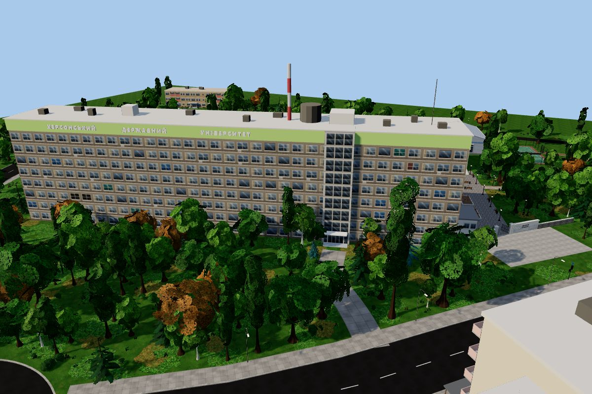

Головний корпус
Головний корпус
Протяжна багатоповерхова будівля з вежею-входом і написом «Херсонський державний університет» на фасаді — візуальна домінанта кампусу. У моделі можна підійти до сходів і оглянути фасад зі сторони вулиці.